AI Integration Patterns
Fitting AI Into Your Existing Systems
Let’s start with a reality check. Your enterprise already has hundreds of systems in production — ERPs, CRMs, data warehouses, customer portals, internal tools, and probably a few legacy monoliths that nobody wants to touch but everyone depends on. AI does not come along and replace all of that. It never has, and it never will. What AI does is work alongside those systems, augmenting what already exists rather than demanding you start from scratch. The real skill of an enterprise architect in this era is not picking the fanciest model; it is figuring out how to connect AI components to the architecture you already have in a way that is clean, maintainable, and governable.
This chapter walks through the integration patterns that show up again and again in real-world enterprise AI deployments. Think of these as blueprints — not rigid prescriptions, but starting points that you can adapt to your own organization’s needs. Some of them will feel familiar because they echo patterns you already know from service-oriented architecture and data engineering. That is intentional. AI is not as alien as it sometimes sounds; most of the hard problems are the same integration problems architects have been solving for decades, just with a new kind of component in the mix.
Pattern 1: AI as a Microservice
This is the simplest and most approachable pattern, and it is often where enterprises start their AI journey. The idea is straightforward: you wrap an AI model behind a REST or gRPC API and call it from your existing application the same way you would call any other downstream service. Your app sends a request, the AI service processes it, and the response comes back. From the perspective of your application code, the AI service is just another endpoint.
This pattern works best when you have a single-purpose AI capability that you want to bolt onto an existing application. Think classification, entity extraction, text summarization, or sentiment analysis. Your app already does its job well; it just needs one new capability, and the AI microservice provides it without requiring you to refactor anything else in the stack.
In terms of implementation, the most common approach is to build a lightweight wrapper using something like FastAPI or Flask, deploy it as a container, and put your standard API gateway in front of it. If you are calling a managed API like OpenAI or Claude, the wrapper handles authentication, prompt construction, and response parsing so your main application stays clean.
There are a few things to watch out for, though, and they tend to catch teams off guard. First, latency is a real concern. LLM calls are not like your typical database query that comes back in milliseconds. Depending on the model and the complexity of the prompt, you could be looking at response times anywhere from one second to thirty seconds or more. Your application needs to be designed to handle that gracefully, whether through asynchronous calls, loading indicators, or streaming the response token by token. Second, cost adds up faster than people expect. Every API call to a hosted model costs money, and if you have a high-traffic application making thousands of calls per hour, those charges become significant. Adding a caching layer for repeated or similar queries can make a dramatic difference. Third, availability is never guaranteed. External AI APIs have outages just like any other third-party service, so you need to build fallback paths — whether that means degrading gracefully, queuing requests for retry, or routing to an alternative provider.
Pattern 2: AI in the Data Pipeline
Not every AI use case needs to happen in real time while a user waits. In fact, a surprising number of the highest-value enterprise AI applications are batch processes that run behind the scenes, chewing through data and storing the results for downstream consumption. There is no interactive user staring at a loading spinner; the AI just does its work on a schedule and the results show up in a dashboard, a database, or a notification.
This pattern is ideal for document processing, content classification, data enrichment, and report generation — basically anything where the latency between request and result is measured in minutes or hours rather than seconds, and that is perfectly acceptable. A classic example is a nightly job that processes all the new support tickets that came in during the day, classifies each one by severity and category, extracts the key entities like product names and error codes, and automatically routes each ticket to the appropriate team. By the time the support managers sit down in the morning, everything is already organized and waiting for them.
The advantages of this pattern are compelling. Batch processing often qualifies for lower pricing tiers from AI providers, because you are not demanding low-latency responses. Error handling is simpler too, since a failed batch can just be retried without a user being affected. And because there is no user-facing latency to worry about, you can afford to use larger, more capable models that might be too slow for interactive use cases. If you are looking for the lowest-risk way to get AI into your enterprise and start demonstrating value, a pipeline-based approach is hard to beat.
Pattern 3: AI-Augmented User Interface
This pattern is about enhancing an existing user interface with AI-powered features rather than building a whole new application from the ground up. The idea is to embed an AI panel, widget, or sidebar into your existing tool — something that can summarize a document, suggest next actions, auto-complete a form field, or provide a chat-style interface for asking questions about whatever the user is currently looking at. The core application stays exactly as it was; the AI is an addition, not a replacement.

This is the pattern to reach for when you want to add AI capabilities to existing applications without rebuilding them. Think of it as creating an “AI copilot” for your internal tools. Your case management system gets a sidebar that can summarize case history. Your CRM gets a button that drafts follow-up emails. Your analytics dashboard gets a natural language query bar. The key insight is that users keep working in the tools they already know, and the AI meets them where they are.
There are a few implementation considerations that deserve careful thought. If you are building a chat-like interface, you will almost certainly want to stream responses rather than making the user wait for the entire answer to be generated before seeing anything. Server-Sent Events and WebSockets are the two most common approaches for this, and both work well depending on your infrastructure. Equally important is graceful degradation — the application should work perfectly fine even if the AI service goes down. The AI panel might be unavailable or show a friendly error message, but the rest of the application should be completely unaffected. Finally, you should build in user feedback collection from the start. Even something as simple as a thumbs-up and thumbs-down button on AI suggestions gives you invaluable signal about quality, and it takes almost no effort to implement compared to the insight it provides.
Pattern 4: Event-Driven AI
In this pattern, the AI component is not called directly by an application or scheduled in a batch. Instead, it listens to events flowing through your event bus or message queue and processes them asynchronously as they arrive. An event fires — a new transaction, a sensor reading, a user action — and the AI consumer picks it up, analyzes it, and either takes an action or stores the result.
This is the right pattern when you need AI decisions on streaming data in near real time. Fraud detection is the textbook example — every transaction that comes through gets evaluated by an AI model that decides whether it looks suspicious, and if it does, an alert is fired or the transaction is held for review. Anomaly detection in IoT data, real-time content moderation on user-generated content, and dynamic pricing adjustments all follow this same shape. The event-driven approach decouples the AI processing from the event producers, which means you can scale, update, or replace the AI consumer without touching the systems that generate the events.
There are two things to be especially careful about with this pattern. The first is backpressure. If events are being produced faster than the AI consumer can process them, you need a strategy for that. Your message queue provides natural buffering, but if the gap between production rate and consumption rate persists, you will need to either scale out your AI consumers horizontally or implement prioritization logic that processes the most important events first. The second concern is ordering. Some AI decisions depend on seeing events in the right sequence — for instance, detecting that a user logged in from two different countries within an hour requires that you process the login events in chronological order. If your architecture does not guarantee event ordering, you need to design around that, perhaps by using partitioned queues keyed on user ID or by buffering events and sorting them before processing.
Pattern 5: RAG-Integrated Application
This is, without exaggeration, the most common generative AI pattern in the enterprise right now. Retrieval-Augmented Generation, or RAG, is the approach where your application uses an AI model to answer questions, but instead of relying solely on what the model learned during training, it first retrieves relevant information from your organization’s own documents and data. The model then generates its answer grounded in that retrieved context, which dramatically improves accuracy and makes the responses specific to your business rather than generic.

The use cases for RAG are everywhere: internal knowledge bases where employees can ask questions and get answers drawn from company policies and procedures, customer support systems that pull from product documentation and known issues, compliance query tools that search through regulatory filings, and documentation Q&A for engineering teams. Anywhere that users need answers sourced from your organization’s own documents, RAG is likely the right pattern.
That said, there are several critical design decisions that will make or break your RAG implementation, and they all deserve serious attention. Access control is perhaps the most important one. In most enterprises, not every user is allowed to see every document. User A in marketing should not be getting answers based on confidential HR documents, and user B in engineering should not be seeing financial projections meant only for the executive team. This means your vector search results need to be filtered by the requesting user’s permissions, which adds meaningful complexity to both your indexing pipeline and your query path. Citation is another essential consideration. You should always return the source documents alongside the generated answer, because users need the ability to verify what the AI is telling them. An answer without a source is an answer that cannot be trusted in a professional setting. Finally, think carefully about freshness — when a document is updated or a new document is added, how quickly does that change appear in search results? If there is a lag of hours or days between a policy being updated and the RAG system reflecting that update, you could be giving users stale or incorrect information, which is potentially worse than giving no answer at all.
Pattern 6: AI Gateway
As soon as your enterprise has more than a handful of applications using AI — and that tipping point arrives faster than anyone expects — you start running into governance problems. Which teams are using which models? How much is each application spending? Is anyone sending sensitive customer data to an external API? Are there audit logs for regulatory compliance? Trying to answer these questions when every application team manages its own AI integration independently is an exercise in frustration. The AI Gateway pattern solves this by creating a centralized layer through which all AI interactions in your enterprise flow.

The gateway takes on several responsibilities that would otherwise be scattered across every individual application. It handles request routing, which means you can send billing-related questions to a less expensive model and legal questions to a more capable one, without any individual application needing to know about multiple providers. It enforces rate limiting and cost budgets on a per-team or per-application basis, so one runaway application cannot blow through the entire organization’s AI budget overnight. It maintains a logging and audit trail for every AI interaction, which is increasingly a regulatory requirement in many industries. It can scrub personally identifiable information from requests before they are sent to external models, providing a centralized point of data protection. And it can manage failover across providers, so if one vendor has an outage, requests are automatically rerouted to an alternative without any application code needing to change.
The right time to introduce an AI Gateway is any time your enterprise has more than two or three applications using AI. It centralizes governance without slowing down individual teams, because each team still builds and deploys independently — they just point their AI calls at the gateway instead of directly at a provider. If you have experience with enterprise service buses or API gateways, this pattern should feel very familiar. It is the same concept applied to a new kind of interaction, and the same architectural reasoning that made API gateways essential for REST services makes AI gateways essential for AI services.
Pattern 7: Human-in-the-Loop AI
There are decisions where the cost of being wrong is simply too high to let an AI system act autonomously, no matter how good the model is. Loan approvals, medical diagnoses, legal document review, hiring decisions, safety-critical assessments — these are all domains where a mistake can cause serious harm to real people, expose the organization to legal liability, or both. The Human-in-the-Loop pattern addresses this by having the AI do the analysis and make a recommendation, but requiring a human to review and approve that recommendation before any action is taken.

The beauty of this pattern is that you still get enormous value from the AI — it does the heavy lifting of analyzing data, surfacing relevant information, and drafting a recommendation — but a qualified human makes the final call. The AI makes the human faster and more consistent, not irrelevant. In practice, this is also the pattern that builds the most organizational trust in AI, because people can see the AI’s reasoning, agree or disagree with it, and develop a calibrated sense of when the AI tends to be right and when it tends to struggle.
There are several implementation approaches, and the best one depends on your use case. A queue-based approach is the most straightforward: the AI processes inputs and places its recommendations into a review queue, and human reviewers work through the queue at their own pace. A confidence-based approach is more sophisticated and often more practical at scale — the AI assigns a confidence score to each recommendation, and only recommendations below a certain threshold are routed to a human reviewer while high-confidence ones are auto-approved. This dramatically reduces the human workload while still catching the cases where the AI is uncertain. Perhaps most importantly, you should build a feedback loop so that human overrides — the cases where the reviewer disagrees with the AI — are captured and used to improve the model over time. Every override is a data point that tells you where the model is falling short, and systematically learning from those data points is how your AI system gets better month after month rather than staying static.
Choosing the Right Pattern
| Pattern | Latency | Complexity | Best For |
|---|---|---|---|
| AI as Microservice | Medium | Low | Single capability |
| AI in Data Pipeline | High (batch) | Low | Bulk processing |
| AI-Augmented UI | Low–Medium | Medium | Enhancing existing apps |
| Event-Driven AI | Low–Medium | High | Stream processing |
| RAG Application | Medium | Medium | Knowledge Q&A |
| AI Gateway | N/A (infra) | Medium | Multi-app governance |
| Human-in-the-Loop | High | Medium | High-stakes decisions |
It is worth emphasizing that most enterprises will not pick just one of these patterns and call it a day. In a mature AI deployment, you will see several of them working together in complementary ways. A typical setup might look like this: an AI Gateway (Pattern 6) sits at the center, providing routing, logging, and cost management for all AI interactions across the organization. Behind the gateway, a RAG application (Pattern 5) powers the internal knowledge base and customer support tools. A handful of AI microservices (Pattern 1) provide specific capabilities like document classification or sentiment analysis. A batch pipeline (Pattern 2) runs nightly to process and enrich large data sets. And for any decision that carries significant risk, a Human-in-the-Loop workflow (Pattern 7) ensures that a qualified person signs off before the organization acts. The patterns compose naturally because they operate at different layers and solve different problems, and the gateway ties them all together under a single governance umbrella.
Key Takeaways
- AI integrates into your existing architecture — you do not need to tear everything down and rebuild from scratch, and any vendor or consultant who tells you otherwise is selling you something you do not need.
- These seven patterns cover the vast majority of enterprise AI integration needs, and understanding them gives you a shared vocabulary for discussing AI architecture with your teams.
- If you are just getting started, begin with AI-as-a-microservice or a batch data pipeline, because these carry the lowest risk and deliver the fastest proof of value.
- Centralize your AI governance early by introducing an AI Gateway pattern before the sprawl of independent integrations becomes unmanageable.
- For any decision where the consequences of a mistake are significant, always design for human override — the technology should support the human, not replace their judgment on matters that truly matter.
Companion Notebook
 — Build a simple AI
gateway that routes requests to different models based on task type,
logs all interactions, and enforces token budgets.
— Build a simple AI
gateway that routes requests to different models based on task type,
logs all interactions, and enforces token budgets.